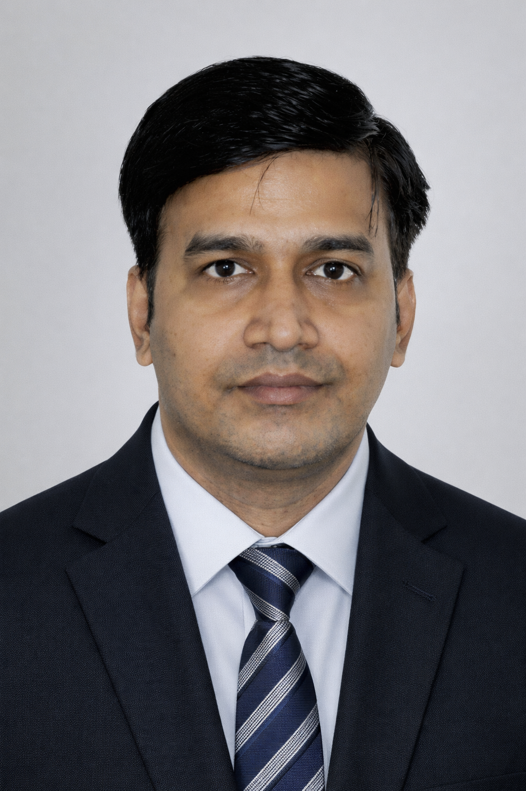

Welcome to my portfolio
Exploring the dynamics of mesoscale oceanic eddies and their impacts on the Bay of Bengal through advanced numerical modelling.
↓ Download CV
I am a dedicated physical oceanographer and ocean modeller with a passion for understanding the intricate dynamics of marine environments. Currently serving as a Project Scientist-II at the National Centre for Medium Range Weather Forecasting (NCMRWF) under the Ministry of Earth Sciences, Government of India.
My research focuses on mesoscale oceanic eddies in the Bay of Bengal, utilizing advanced numerical models like ROMS and COAWST. This work has deepened my understanding of how these dynamic structures influence broader oceanographic and atmospheric processes.
Project Scientist-II at NCMRWF
PhD from IIT Delhi
Mesoscale Eddies & Ocean Modelling
Bay of Bengal Dynamics
National Centre for Medium Range Weather Forecasting (NCMRWF)
Ministry of Earth Sciences, Govt. of India, Noida
Centre for Atmospheric Sciences
Indian Institute of Technology Delhi
Centre for Atmospheric Sciences
Indian Institute of Technology Delhi
Centre for Atmospheric Sciences
Indian Institute of Technology Delhi
Study of Oceanic Mesoscale Eddies of Bay of Bengal using a Numerical Model